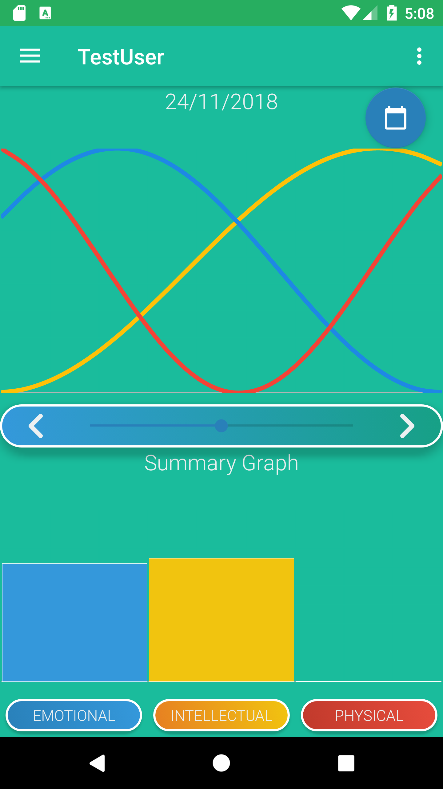

Unlock the secrets of your Biorhythms
Mio is available for Android on Google Play

Mio is available for Android on Google Play
Compare your biorhythms to family and friends!
Use the graphs to identify when you are feeling physically low and when you are peaking!
Feeling emotional? - It could be your Biorhythms
Sometimes we feel intellectually as sharp as a knife and at others we feel jaded. Is this the natural pattern of our Biorhythms?
Jump to any date after you were born to view your Biorhythms